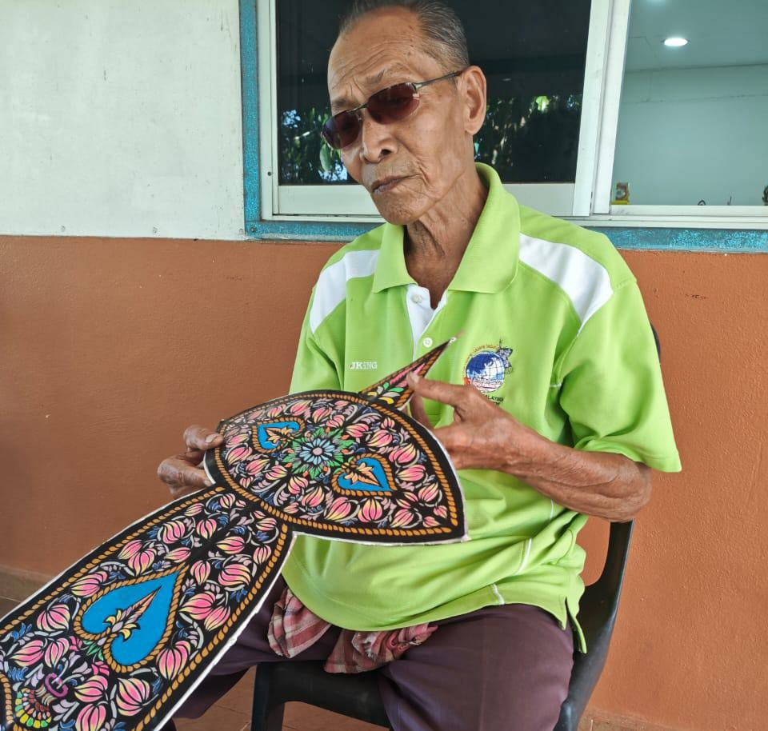

THE ART OF WAU MAKING

Traditional Craftsmanship

Unique Designs

Pak Non is a traditional wau craftsman who has dedicated his life to preserving the art of wau making and sharing Malaysian heritage with future generations.

To preserve and promote traditional wau making through education, cultural appreciation and community engagement.
To inspire future generations to appreciate and continue Malaysia's wau heritage.